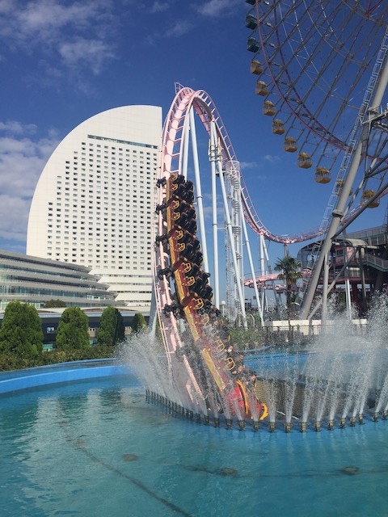
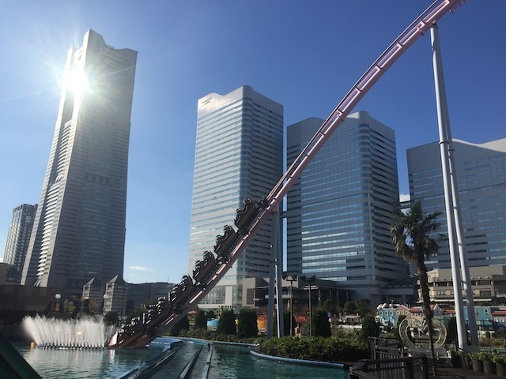
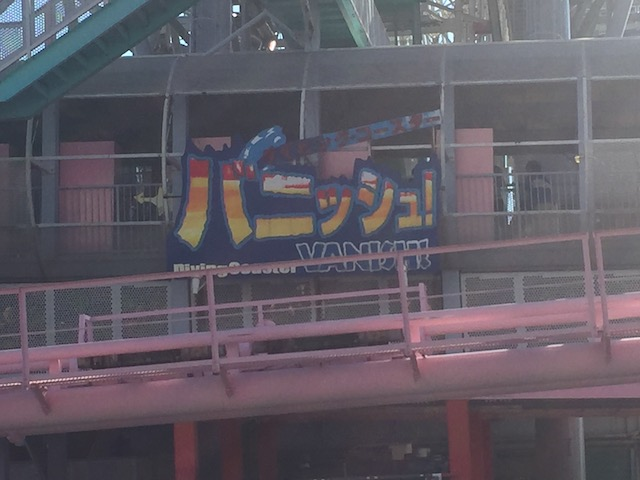
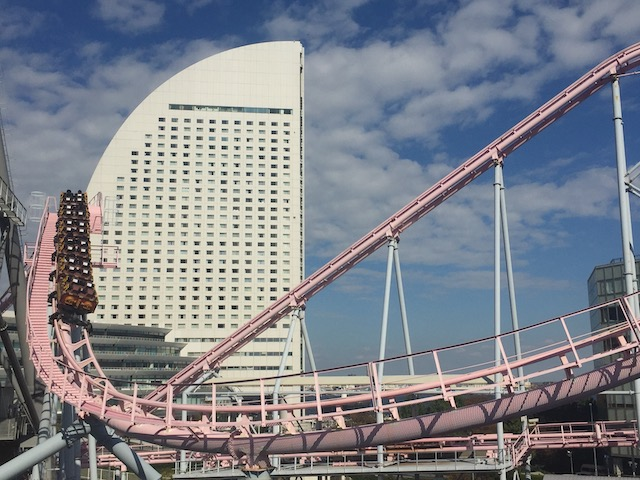
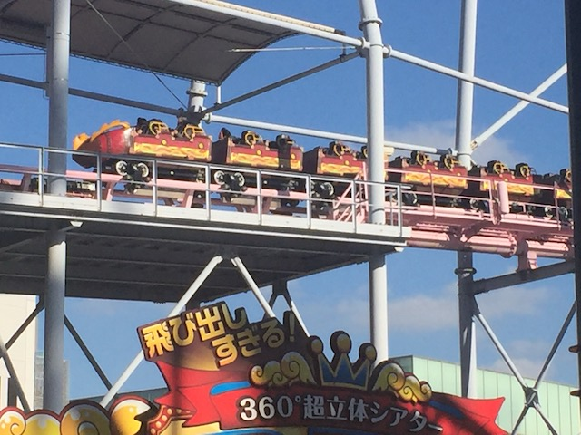
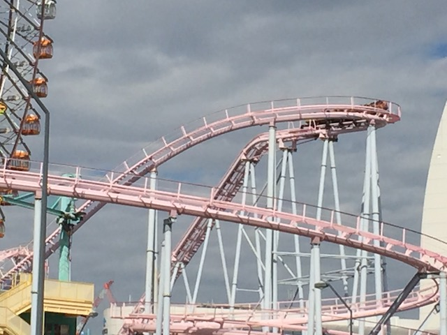
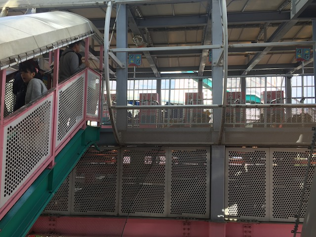
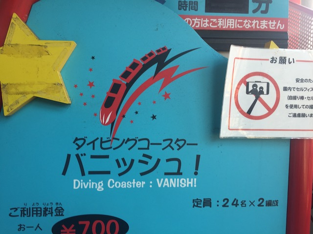

| |
Vanish: Dive Coaster Review

We're here at Yokohama Cosmoworld where we're going to be riding their star attraction. Vanish: Diving Coaster. Now just hearing the name, you probably don't know what coaster this is. However, if you saw a photo of this coaster, you'll probably recognize it. Cause this coaster is one of the most famous coasters of all time. There are TONS of photos of this coaster. That water tunnel is seriously one of the most famous elements of any coaster. Mainly because of how visually striking it is. People look at this coaster, and they see "WOW!!! A COASTER THAT GOES UNDERWATER!!!" So naturally, this coaster gets A LOT of attention, even from non-coaster enthusiasts. So it's something I've known about for a while. I knew it wasn't crazy (as most enthusiasts know not to expect a Top 10 Ride), but even so. This ride was honestly a dissapointment. Why so? Well. hop aboard and let's find out. We hop in the cars, and pull down the restraints. Now this ride uses OTSRs. Annoying since this ride doesn't go upsidedown, and I generally prefer it when coasters don't have OTSRs (Thank you RMCs, Schwarzkophs, and Premier Coasters). But tons of coasters in Japan that don't need OTSRs have them. You just ignore them. But these, these are particuarly bad OTSRs. These ones don't really fit you (and I'm saying this as a skinnyass twig). Also, these things are ROCK HARD!!! Not a single bit of padding on these things. So if there's any headbanging, it's not gonna be pleasant. Anyways, we go around a turn, get a nice view of Yokohama Landmark Tower, the fancy hotel, and the rest of Yokohama Cosmoworld before climbing up the lifthill. It's a very slow lifthill, but still gives us enough time to really enjoy looking at Yokohama and the Pacific Ocean. Eventually, we reach the top, go around a slight turn, and head down the first drop. It's nothing big. Nothing special. But we gain some speed and the ride is really off now. We then head up a small little hill. No airtime here, but at least we get a great view of Yokohama. We head down a small dip, and....oof. There's a little bit of headbanging here. Normally, it wouldn't be a big deal. Except for those pesky rock hard OTSRs. That's obnoxious. But even so, it's so mild that it's no big deal. Even with terrible restraints. We rise up, and then head down a decent sized drop. Heading right for the water! YAY!!! We're in the famous dive part that everyone photographs!! WHOOSH!!! Dive RIGHT into the water. It may look amazing off ride, but here, you see it for what it is. A drop into a tunnel that's surrounded by water. Anaconda @ Kings Dominion also has one of these tunnels. Only without the fountains to create the diving illusion. Though there is a cool light show under the water. A nice little surprise as since I don't watch POVs, I wasn't expecting that. We rise out of the water, back onto dry land, and into a decent sized hill. No airtime. Lame. Dip down, go around a turn (Wave hello to the Spinning Coaster), right before heading into FAKE HELIX OF DEATH!!! It's not that fast, and not that intense. But it does look cool. So it has that going for it. Rise up a little bit, and glide into the brake run. So that's Vanish: Diving Coaster. Yeah. This ride is not that good. It's bark is much worse than its bite, and it's honestly, kind of a dull coaster. I know I wasn't expecting too much, but keeping it real. This was a dissapointment. But on the bright side, it is a VERY pretty coaster. If you're already here, and in Yokohama, it's worth riding at least once. It may not be great, but it is iconic, and not that expensive. You might as well give it a ride.
6/10
Location: Yokohama Cosmoworld
Opened: 1999
Built by: Senyo Kogyo
Last Ridden: November 14, 2018
Vanish: Diving Coaster Photos








Home
|